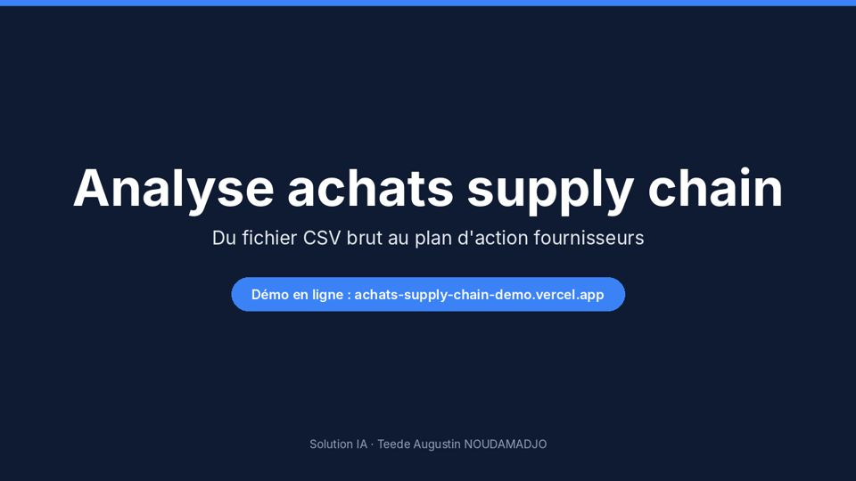

Solution IA
Solution IA conçoit des applications sur mesure (données, web, IA) pour résoudre des problèmes précis d'entreprise : analyse achats supply chain, santé, conformité EUDR.
Voir le projet →Data Scientist Junior à Lyon. Master Big Data & Intelligence Artificielle (ESTIAM Lyon), licence de mathématiques (École normale supérieure, Bénin). Je relie les données et le terrain, et je conçois des applications sur mesure pour résoudre des problèmes concrets d'entreprise.

Solution IA conçoit des applications sur mesure (données, web, IA) pour résoudre des problèmes précis d'entreprise : analyse achats supply chain, santé, conformité EUDR.
Voir le projet →
Teedaïk est un réseau social francophone et un agrégateur d'actualités IA et tech, en production, conçu avec une sécurité de niveau professionnel (Argon2id, 2FA, RGPD).
Voir le projet →
RetentIA prédit et explique le départ des clients télécom : tests du khi-deux, régression logistique, comparaison de modèles (ROC-AUC 0,85). Cibler 20 % des clients capte 50 % des départs.
Voir le projet →
IA·Classroom propose 40 modules gratuits en 4 piliers pour se former à l'intelligence artificielle et au no-code, du débutant à l'avancé, avec certification.
Voir le projet →
AfrIA est une plateforme gratuite pour apprendre l'intelligence artificielle : 53 modules, filière universitaire, espace enseignant, 4 langues et actualités IA en direct.
Voir le projet →Data Scientist Junior en alternance chez ASS Transport, une PME de transport routier de marchandises en Île-de-France, je croise les données Finance, RH et Exploitation pour aider la direction à décider. Fondateur de Teedaïk et de Solution IA, je conçois des plateformes web autour de l'IA, de l'éducation et des besoins métier.